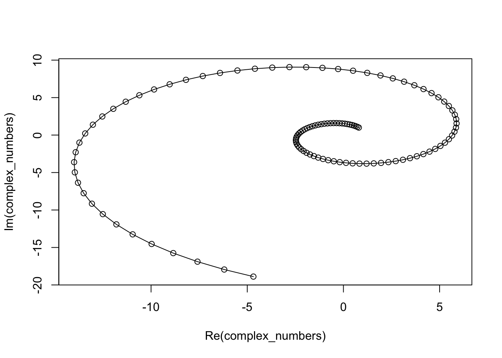

show code for this result
[1] 17[1] 3.4This tutorial is adapted from a fabulous youtube video by Very Normal. I recommend watching this video before starting this tutorial.
Realistically, you’re never going to use complex numbers, so you can safely skip this exercise. However, I think complex exponentiation is pretty, so you’d really be missing out.
# change real and imaginary parts to see how the plot changes
z <- (0.8 + 1i)
# take z to the power of 1, 2, ..., whatever the 'to' argument is
complex_numbers <- z ** seq(from = 1,
to = 12, # change to plot more data
by = 0.1) # change to plot more data
# plot the complex numbers
plot(complex_numbers, type = "o") # possible types: "p", "l", "b", "c", "o", "h", "s", "S", "n"
factors combine numbers and strings. They are useful for categorical data.
vectors: stores ordered data of the same type
matrix: stores data in 2 dimensions
arrays: higher dimensional matrices
lists: key value pairs
dataframes: each row is an observation, each column is a characteristic
tibbles: data frames with extra functionality
for loop: will run code a certain number of times
while loop: will run code until a certain condition is no longer met
if (condition) {
code to run if condition is met
}you can add else statements, and even chain else statements, but it is easy to get confused
function_name = function(inputs) {
a bunch of code you would like to reuse
the last line of code is the output of the function
}how to load and detach libraries
devtools - downloading from github
CRAN
read_csv and related funcions for reading data
readxl::read_xlsx for excel files
how to make a tibble
almost all of the functions in the tidyverse input and output tibbles; we can pipe data
manipulation of data, especially useful for cleaning
select: select or remove
filter
mutate: create new columns
list columns are super useful - lists can have different data types
map functions - output is a list column
pivot wider
pivot longer
mappings
geom - like geom_line or geom_point
you can add as many layers as you want
themes